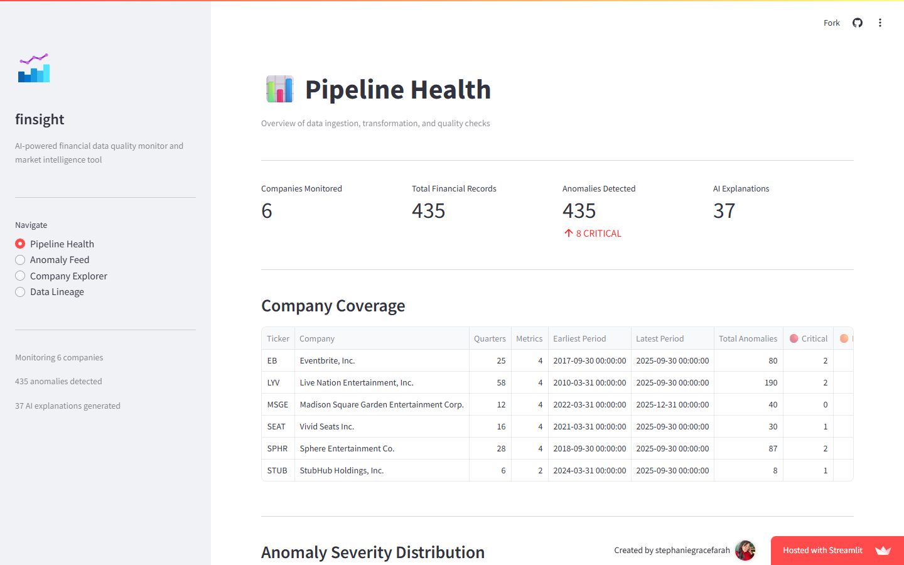

finsight: catch bad data before anyone notices
- Problem
- Financial data teams spend real time manually investigating data quality issues (missing values, duplicate filings, metric restatements, pipeline failures) that surface only after a downstream stakeholder notices something wrong. By the time an anomaly is flagged, trust in the data is already damaged.
- What I made
- A pipeline that ingests real SEC filings for six public companies, runs the data through a three-layer anomaly detection engine, and uses Claude to write a plain-English explanation of every anomaly serious enough to matter, all surfaced in a live four-page dashboard.
- Where it is
- Live, with a public demo running on real SEC filing data for six companies.
The problem and the spec
The core problem finsight solves: financial data quality issues usually surface only after a downstream stakeholder notices something wrong, and by then trust in the data is already damaged. finsight automates the investigation loop that normally happens by hand, from raw filing to a plain-English explanation of what actually changed and whether it matters.
The hardest scoping call was which companies to monitor, and six was a deliberate choice, not a shortcut. Each one stresses a different part of the pipeline: Live Nation as the anchor with the deepest filing history, StubHub as a genuine edge case (it IPO'd in 2025, so there's barely any history to work with), Sphere Entertainment because it's volatile enough to be anomaly-rich on its own.
| ID | Requirement | Priority |
|---|---|---|
| R1 | Detect anomalies using a three-layer engine: rolling Z-scores per metric, Isolation Forest across all metrics at once for patterns no single metric would show, and a combined severity score | Must |
| R2 | Call the Claude API only for HIGH and CRITICAL anomalies, not every row, so cost and signal both stay under control | Must |
| R3 | Slack alerting, price and volume context via yfinance, and a feedback loop for retraining the anomaly model | Later |
Three of the decisions, reconstructed from the project's own engineering notes.
Design
There's no separate design doc for this one. The dashboard's structure came straight out of the pipeline it's built on: four pages that mirror the actual data flow, Pipeline Health (ingestion and quality checks), Anomaly Feed, Company Explorer, and Data Lineage. The goal was that anyone on a financial data team could open it and understand what's wrong without writing a single query.

Pipeline Health, the landing page: coverage across all six companies and severity at a glance. Real data from the public demo.
Technical design
Anomalies are scored, not just flagged. A rolling Z-score (8-quarter window, threshold of 3 standard deviations) catches per-metric outliers. An Isolation Forest runs across all eight metrics at once and catches multivariate anomalies a single metric would miss entirely, a quarter where revenue, cash, and operating income all decline together but none individually crosses its own threshold. The two combine into one severity score from 0 to 100, weighted 60 percent to the Z-score (more interpretable, metric-specific) and 40 percent to the Isolation Forest (catches what the Z-score can't), then bucketed into LOW, MEDIUM, HIGH, and CRITICAL.
Z-score alone, or Z-score plus Isolation Forest
| Option | Why it was attractive | Why I didn't pick it |
|---|---|---|
| Z-score only | Simple and interpretable: exactly how many standard deviations off a number is | Misses multivariate anomalies entirely. A quarter where revenue, cash, and operating income all decline together but none individually crosses the threshold would sail through undetected |
| Z-score plus Isolation Forest, chosen | Isolation Forest is unsupervised, so it needs no labeled training data, and catches exactly the multivariate pattern Z-score alone would miss | A second, less interpretable model in the loop; the severity score has to explain itself, which is part of why the weighting favors the more interpretable Z-score component |
Stack: Python 3.11, DuckDB, dbt Core, scikit-learn, Anthropic Claude API, Streamlit, Plotly, SEC EDGAR.
Building and launching
Built in about two days: ingestion and a dbt scaffold on day one, the transformation pipeline, anomaly engine, and severity scoring on day two, then a couple of small fixes (a dbt_utils test syntax issue, the EDGAR rate limit) before the write-up.
The best bug: the first version of the staging model selected straight from the raw facts table with no period filtering, and the anomaly detector immediately started firing constantly on Live Nation's revenue data. The data wasn't actually anomalous. SEC EDGAR stores true quarterly values and year-to-date cumulative totals in the same field with the same period end date, so a Q3 year-to-date figure sitting next to a true Q3 figure looks like a real spike to a Z-score model. The fix was a period-length filter, true quarters run close to 90 days, so filtering on period length cleanly separates quarterly from cumulative values without needing to parse a field that's inconsistently populated across companies.
Looking back
The data quality tests catch the failure modes I actually expected (nulls, duplicate filings, a balance sheet that doesn't balance), but the severity scoring model doesn't have a feedback loop yet: an analyst can't tell it a flagged anomaly wasn't actually a big deal and have that adjust future scoring. That's next, along with giving the Claude explanations an investment framing instead of just an operational one, since a data quality tool and something an analyst would actually use for research turn out to be one small reframe apart.